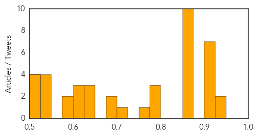

Influenza
30-Day Web Trend
0 alerts, 0 warnings

30-Day Twitter Trend
2 alerts, 0 warnings

Article Locations

Article Confidences

Top Articles:
Top Tweets:
-
No tweets found for Aug 14, 2014
Unknown
30-Day Web Trend
0 alerts, 0 warnings

30-Day Twitter Trend
6 alerts, 0 warnings

Article Locations

Article Confidences
Top Articles:
- 0.946
- Fear of epidemic grips flood-hit Kendrapada
- 0.925
- RTI International, Government of Zimbabwe’s Ministry of Health and Child Care Launch New Health Information System in Zimbabwe
- 0.919
- Certain SD state workers required to get flu shot; gov says move is good public health policy
- 0.917
- Chicago Tribune
- 0.917
- Chicago Tribune
- 0.917
- Chicago Tribune
- 0.915
- 2 more TB cases identified in southern Sask. students
- 0.910
- The world windows to Thailand
- 0.909
- Certain SD state workers required to get flu shot
- 0.866
- Evidence suggests Ebola toll vastly underestimated
- 0.866
- Iraq's Maliki to deliver televised speech shortly
- 0.866
- Obama speaks to presidents of Liberia, Sierre Leone about Ebola
- 0.866
- U.S. Embassy dependents to leave Sierra Leone due to Ebola
- 0.866
- Governor of Iraq's Sunni heartland seeks U.S. help against militants
- 0.866
- Shelling comes close to centre of Ukraine's Donetsk for first time
- 0.866
- Putin says Russians do not need conflict with outside world
- 0.866
- Finnish President to meet Putin in Russia
- 0.866
- Riot police clear a street of demonstrators in Ferguson, Missouri
- 0.866
- A protester throws back a smoke bomb while clashing with police in Ferguson, Missouri
- 0.800
- Health officials investigating 3 cases of tuberculosis between Regina and Moose Jaw
- 0.793
- Vietnam detects first A/H5N6 virus in poultries
- 0.785
- Rabies killing children in Ashanti region
- 0.755
- Pfizer's Prevnar 13 Backed by U.S. Panel for Expanded Use
- 0.719
- Govt aware of single case of tiger mortality due to virus
- 0.693
- Worst TB outbreak in 5 years hits Alabama prisons
- 0.689
- CDC: Outbreak Linked to Organic Sprouted Chia Powder Produced Three Salmonella Strains
- 0.645
- Health official: NE Nebraska tuberculosis cases could be tied to
- 0.637
- Health officials in NE Nebraska continue to investigate two conf
- 0.632
- Petting zoos can suck: Second outbreak of infection with a rare Cryptosporidium parvum genotype in schoolchildren associated with contact with lambs/goat kids in Norway
- 0.612
- Health Department Looking For Those Who Had Contact With Student With Tuberculosis
- 0.610
- US advisory panel recommends Prevnar 13 vaccine for older adults
- 0.602
- Prosecute people who fail to immunize their pets- Dr. Anthony Enimil
- 0.592
- Patients Deprived of Medical Assistance
- 0.575
- Alabama Facing 'Serious' Tuberculosis Outbreak In Prisons
- 0.549
- Massachusetts hospitals report significant increase in patient safety problems
- 0.548
- Government covers medical costs of drug overdose patients
- 0.533
- HIV drugs inhibit prostate cancer virus
- 0.528
- CGIC, Maxicare ink pact for healthcare
- 0.523
- U.S. advisory panel recommends Prevnar 13 vaccine for elderly
- 0.522
- Increasing Cases of Meat Allergy Triggered by Tick Bite
- 0.511
- Student tests positive for tuberculosis
- 0.501
- Austin Health hospital mistakenly 'kills off' over 200 patients sending death notices to GPs
Top Tweets:
-
No tweets found for Aug 14, 2014